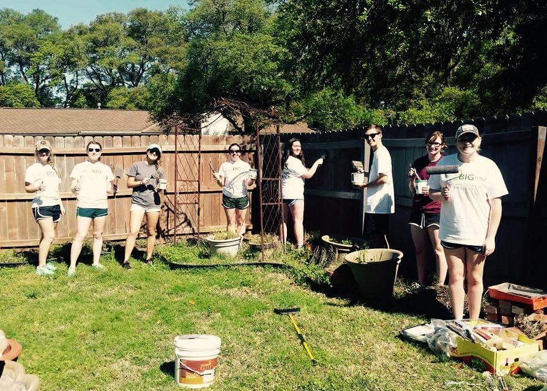
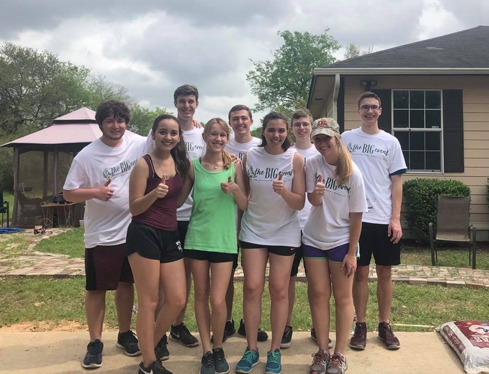

April-May 2015:
I participated in a brass ensemble that travleled to homes of Alzheimer's patients as a part of an Eagle Scout Project for one of my friends.
April 2017:
I participated in Big Event), a large, campus-wide community service event geared towards giving back to the Bryan-College Station Area. I learned a lot about Selfless Service (one of the core values of Texas A&M University) interacting with the family whose fence we painted and garden we helped clean and mulch.
March 2018:
Once again, I participated in Big Event, but this year, I volunteered to serve as group leader for my friends in the Wind Symphony. I got the word out to my friends to rally support before I volunteered for the chance to reach out to the family and perform organizational duties. This time, I learned more about another core value: Leadership. We all had a great time getting to know the family while painting, raking, and much more.
